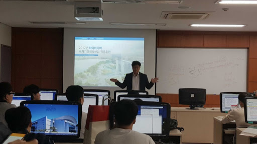

동양미래대
나는 폭풍이 두렵지 않다.
나의 배로 항해하는 법을 배우고 있으니까.
I am not afraid of storms for i am learning how to sail my ship.
-
교육이념
'몸에 지닌 작은 기술이 천만금의 재산보다 낫다(積財千萬不如薄技在身)'라는 정신 하에 산업 사회에 적응할 수 있는 유능한 전문 직업인을 배출하고자 합니다.
MORE... -
발전계획
최고수준의 교육을 제공하고, 실무적 전문인을 양성하고, 지역사회에 책임을 다함으로 대내외 경쟁력을 갖춘 대학으로 발전해야 합니다.
MORE... -
대학상징
교명 변경과 더불어 21세기의 사회 변화에 대해 능동적으로 대응하고 창의적 혁신을 통해 미래로 나아가는 대학의 의지를 나타내도록 고안되었습니다.
MORE...

-
컴퓨터소프트웨어공학과
산업체 수요 파악을 통한 교과과정의 운영에서부터 취업에 이르기까지의 고용 창출형 산학연계 시스템을 운영하고 지속적인 진로지도 및 취업지도를 통해 성취동기를 부여하고 현장에서 필요로하는 인재 양성을 적극 모색한다.
학과 사이트로 가기
- 
-
컴퓨터정보공학과
유무선 웹프로그래, 산학협동 및 현장직무 분석을 통해 산업현장과 밀착된 교육과정을 개발, 운영하고 인터넷 콘텐츠 개발, 인터넷 비즈니스 응용 및 인터넷시스템관리 등의 세부 전공 분야에 대한 실습중심 교육을 통하여 현장중심형 인터넷 기술전문가를 양성한다.
학과 사이트로 가기